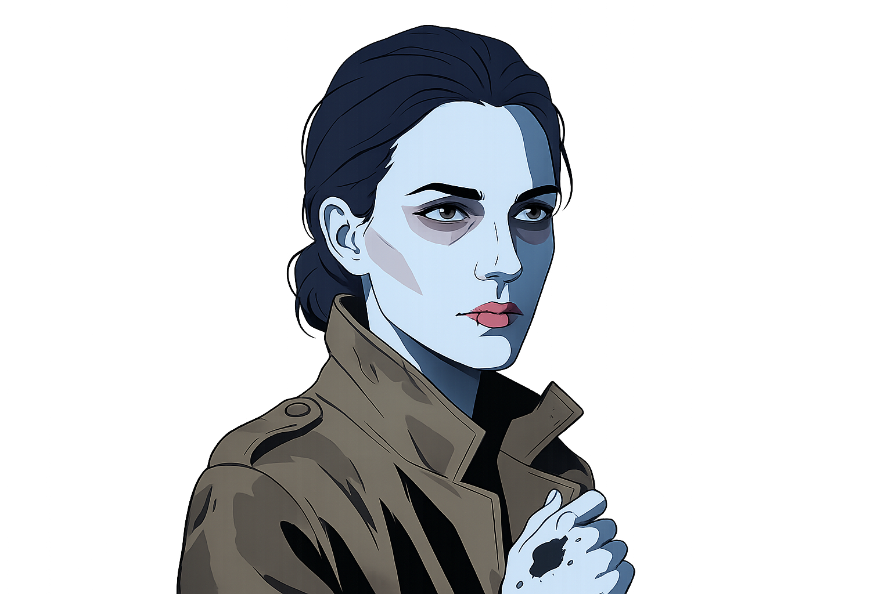

κατάβασις
Una discesa. Una verità. Nessun ritorno uguale.

MIRA VOSS (31) — L'ultima Archivista Capo della Torre, la mente cancellata prima dell'impatto.
Mira Voss è stata trovata priva di vita ai piedi del grande lucernario della Torre. Le autorità parlano di "caduta fatale", ma un dettaglio tormenta chi indaga: la sua mente era vuota. Qualcuno ha rimosso i suoi ricordi prima della fine.
La Torre custodisce i segreti della città, bobine magnetiche dove i cittadini depositano i ricordi che vogliono dimenticare. Mira aveva scoperto una boccetta non registrata, un frammento di memoria proibita risalente alla notte del 14 novembre. Ora, quella boccetta è scomparsa.
Chi ha eseguito la cancellazione? Elias, il custode che sorveglia le porte da trent'anni? Calista, la contrabbandiera che vende memorie rubate nei vicoli del mercato? O il dottor Dorian Pale, il medico che opera le terapie dell'oblio?